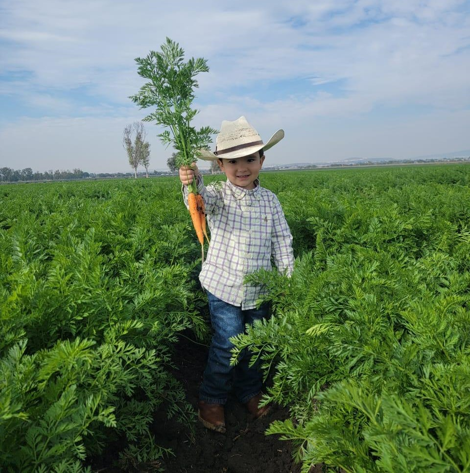
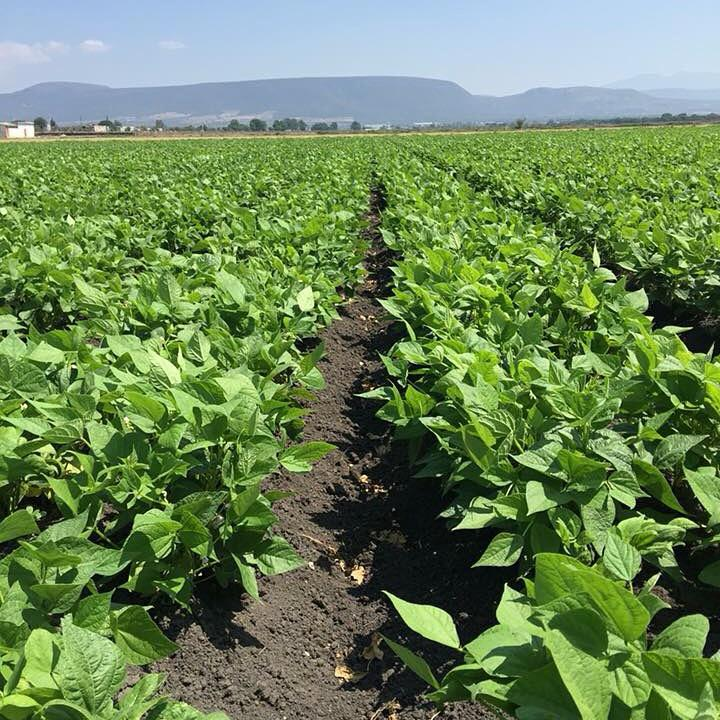
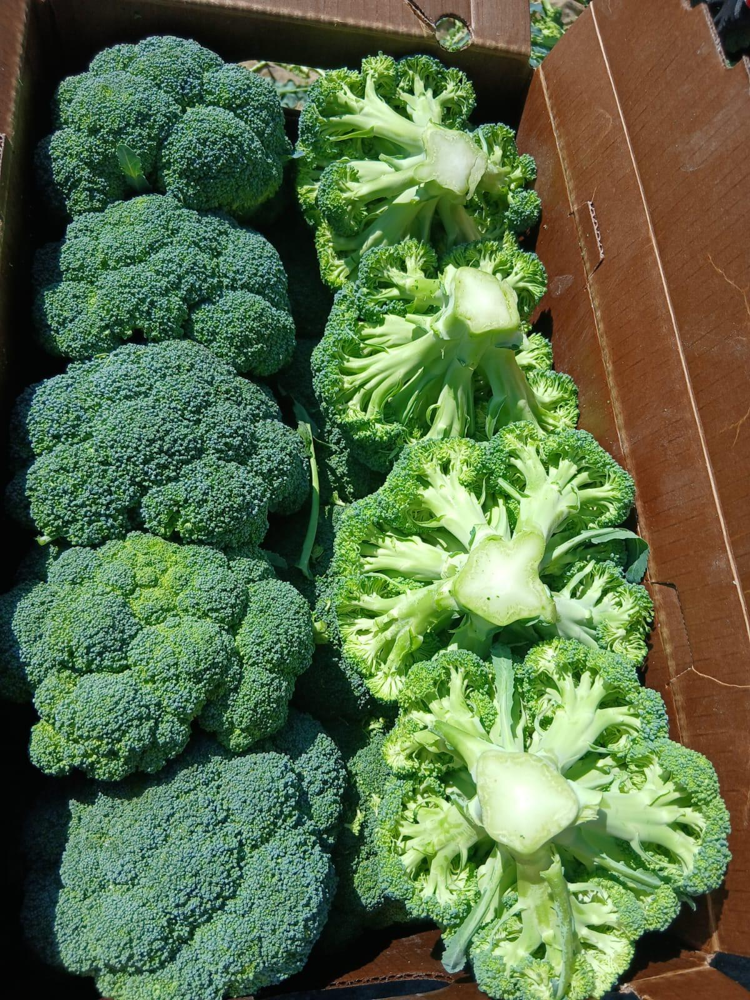
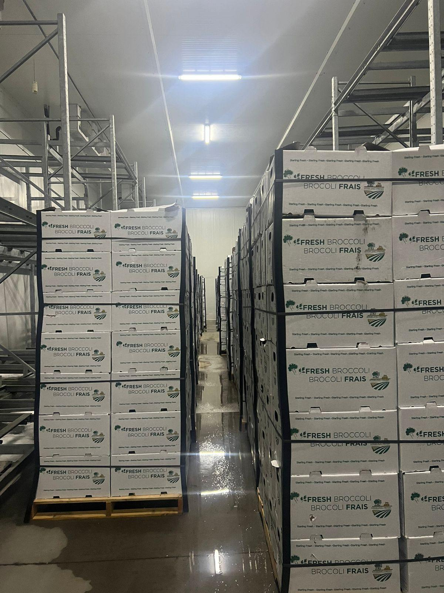

Desde Houston y con producción estratégica en México, Sterling Fresh impulsa una cadena confiable de abastecimiento para mercados que exigen consistencia y calidad.
Calidad
Cobertura
Logística

Sterling Fresh Inc. cuenta con una trayectoria de más de 80 años en la comercialización de productos agrícolas y una operación enfocada en responder con rapidez, calidad y eficiencia a compradores de Estados Unidos e internacionales.
Con cultivos en Querétaro, un empaque estratégico en Guanajuato y coordinación comercial desde Houston, la empresa integra campo, empaque y logística para entregar vegetales frescos con trazabilidad y consistencia.
Sterling Fresh cuenta con más de 800 hectáreas de cultivo en Querétaro, México, una región estratégica que permite producir durante todo el año bajo condiciones óptimas para abastecer programas de exportación con continuidad.
Adicionalmente, la empresa opera un empaque en Guanajuato, clave para asegurar que cada envío cumpla con estándares altos de calidad, frescura, presentación y consistencia comercial para distintos mercados internacionales.
Como parte de su estructura operativa, Sterling Fresh trabaja de la mano con su empresa hermana en México, Agrícola Hierba Santa, fortaleciendo su integración vertical y manteniendo control del proceso desde el campo hasta el cliente final.
A lo largo de su historia, la compañía ha construido una reputación basada en confianza, consistencia y adaptación a las necesidades de sus clientes, combinando tradición, experiencia y tecnología para ofrecer productos del campo de alta calidad.


Produccion estrategica en Mexico, empaque coordinado y direccion comercial desde Houston para programas de exportacion con continuidad.

Suministro de brócoli, zanahoria, cebolla, apio, maíz y otros productos con enfoque en frescura, volumen y continuidad.

Procesos de selección, presentación y resguardo para que cada embarque llegue con especificaciones comerciales claras.

Planeación comercial y operativa para embarques confiables hacia clientes que necesitan cumplimiento y capacidad de respuesta.
Coordinamos nuestra operación desde Houston para asegurar una logística eficiente y un suministro constante de vegetales frescos hacia cualquier destino.
AV. COLINAS DEL CIMATARIO 301 QUERETARO, QUERETARO, 76090 Mexico
+1 (123) 456-7890